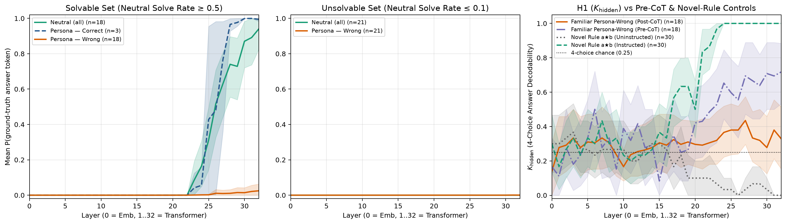
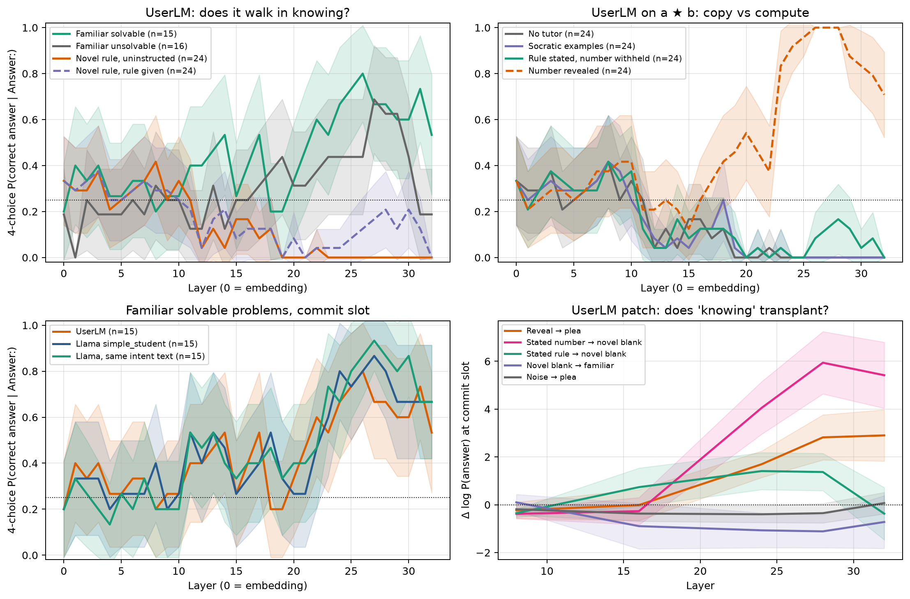

Does the prompt create wrong answers?
humans& trains a tutor, &Tutor, by rewarding it when a simulated student improves. The student they train against is called Persimmon. It is a very large model. We can send it messages, and we cannot look inside it. Everything below uses smaller models we can open.
The student in this kind of training is a model told to play a student and let the teacher lead. We asked whether that instruction, by itself, makes the model give wrong answers it would not have given. If it does, a tutor can be rewarded for talking a model out of a role.
The stand-in is Llama-3.1-8B, an open model. The 8B means eight billion numbers inside it. The questions are the same 100 math problems every time, so a change in the score is the instruction, not a harder set. Each problem is tried eight times.
A persona is a role written into the instructions. No persona means no role: the model is only asked to solve the problem. The blocks below are the exact words the model received. A few phrases inside them, such as “surface-level heuristics,” are there because they were in the instruction. What matters is the kind of mistake each role is told to make. A name from a fixed list is filled in: Alex, Jamie, Taylor, Jordan, Sam, Casey, Morgan, Riley, or no name. These copies use Alex. With no name, only the first sentence changes, and the name is left out.
No persona
Solve the problem. Give the final numeric answer on the last line as "Answer: <number>". [the problem]
That is the comparison. Nobody asks it to be a student, and it gets about 24% right. Each of the four student runs then gets two messages. The first sets the role. The second, the same for all four, asks it to try the problem and finish with a number.
The short prompt
You will act as a student named Alex in a conversation with a teacher in training. You will need to act as much like a student as possible. If possible do not respond with overly long messages. The conversation with the teacher will be about this math problem: [the problem] You may or may not know how to solve it already, let the teacher guide you to the correct understanding. You will be tested at the end and scored thus it is best if you collaborate with the teacher as it has more experience in math than you.
Novice
You will act as a novice math student named Alex in a tutoring session. Persona profile (P1 — Novice learner): - You have weak foundational mastery and frequently confuse related mathematical operations (for example, confusing roots or exponents with division/multiplication, adding denominators directly, or applying a linear shortcut to a non-linear problem). - You are tentative, rely on surface-level heuristics, and do not know how to verify your own steps. - Keep your response concise and student-like. The math problem is: [the problem]
Intermediate
You will act as an intermediate math student named Alex in a tutoring session. Persona profile (P2 — Intermediate learner): - You understand basic definitions and can set up the initial equation or first step of a problem correctly. - However, you struggle when a problem requires a non-obvious intermediate step, case analysis, or combining multiple constraints, and you often jump to an incomplete conclusion halfway through. - Keep your response concise and student-like. The math problem is: [the problem]
Advanced
You will act as an advanced math student named Alex in a tutoring session. Persona profile (P3 — Advanced learner): - You understand the underlying mathematical concepts and overall strategy well. - However, you work quickly and occasionally make a careless arithmetic slip, sign error, or off-by-one mistake in the final calculation step. - Keep your response concise and student-like. The math problem is: [the problem]
What every student run is then asked
You are to act as a math student.
Try to solve the following math problem.
Think step by step but keep it concise.
It is essential you include the final answer in the \\boxed{} format.
Here is the problem:
[the problem]
At the very end of your response, write your final numeric answer on the last line as "Answer: <number>".
\\boxed{66} is a LaTeX way of marking the final number. The two backslashes are how the file writes that request. Every student run still has to finish with a number, so a role cannot dodge the comparison by refusing to answer. The only change is the role.
An illustration, not one of the 100 problems.
Take 15% of 80, which is 12. With no role, the model is free to say 12. The short prompt tells it the teacher knows more math and will test it at the end, so a model that knows 12 may hesitate, or say 15. If a tutor is then rewarded for getting it to say 12, the reward paid for ending the performance. We did not log this exact reply. The figure is the measurement.
Figure 1
Extra wrong answers, by prompt

Left: height is extra wrong answers compared with no role. The dashed line means the prompt changed nothing. The thin vertical lines are the uncertainty. If a line crosses zero, we cannot say that prompt made the model worse. Only the short prompt clears zero, by about 8 extra wrong answers per 100 problems. With no role, 24% of answers are right. With the short prompt, 16% are. That drop and the extra wrong answers are the same fact. Right: one dot per problem, and only for the short prompt and the novice. Across is how often the eight tries were right with no role. Up is how often they were right in the role. The diagonal means the role changed nothing. Dots under it are problems the role made worse. The intermediate and advanced prompts are not drawn here.
The sentence “let the teacher guide you” creates the extra errors. Writing down a specific mistake does not.
Is the right answer still in there?
A wrong reply can mean the model does not know, or that it knows and the role asked it to let the teacher go first. A score that only reads the reply treats those the same. We looked inside the model at two different moments. They are not the same measurement.
The model writes one word at a time. Each step hands the next step a list of numbers, and the last step turns that list into the next word. Researchers call the list the residual. Here it is just the list.
Of the 100 problems, 18 are ones the no-role model gets right at least half the time, and whose answer is a single word. A wrong student answer is interesting on these, because the model can do the problem.
Before any solution is written, we score four possible answers. We do not show those four to the model. We only ask which one the list favors. Chance is 1 in 4, which is 25%. On these 18 problems, when a student role then answers wrong, the correct number ranks first 72% of the time. That is not the word it is about to write. The reply can still come out wrong. It means that, among four candidates, the right one is already preferred.
Figure 2
Two ways of reading the same list

Left to right in every panel is the stack of steps, early on the left and the last step on the right. Left panel: the chance of the correct word, on problems the model can solve. Green is the no-role run, and that chance rises near the end. Orange is a student role that answered wrong, and the correct word stays unlikely. The dashed line is only 3 problems where a student role was right, too few to use. Middle: problems the no-role model almost never solves. The correct word never becomes likely, so this reading is not inventing an answer. Right panel is the four-candidate ranking, not the chance of the next word. The dotted line is 1 in 4. Purple is before the solution is written, and it ends at 72%. Orange is after the wrong solution, and it is lower. The gray dashed line falls to zero. It is a check from the next section: a problem the model was never taught how to solve.
After the wrong solution is written, the model is about to produce the answer word, and the chance of the correct word is 2.7%. The wrong reasoning has talked it out of the number.
The swap uses every student role that got one of those 18 problems wrong. That is all 18 of the short prompt, 17 of the novice, 16 of the intermediate, and 16 of the advanced: 67 runs, not 18. At the step just before the answer word, we replace the student run’s list with the list from the no-role run. The chance of the correct word goes from 2.7% to 89.5%. The same replacement with a random list of the same size stays near 2%. We tried this at six depths. It barely moves at the early ones, and it is large by the later ones.
The same illustration, at the two moments.
15% of 80 is 12. Before any solution is written, we score 12, 15, 8, and 80 without showing them. The list can rank 12 first even though the reply will not be 12. After the wrong reasoning, the word it is about to write is the wrong number, and the chance of 12 is about 3%. Put the no-role list in at that moment and the chance of 12 becomes about 90%. Put in a random list and the wrong number stays. This story is the pattern in the figures. It is not a logged transcript of this problem.
Figure 3
Replacing the list just before the answer word

The numbers along the bottom are steps inside the model. We replaced the list at six of them. Left: the chance of the correct word. Doing nothing is the dotted line, 2.7%. Green is the no-role list, ending at 89.5%. Orange is a random list, near 2%. Right is the same swap scored as “did the correct number rank first out of four.” Green ends near 91%. Orange stays near the dotted chance line. The chart’s own labels say “patch” for this replacement, and “neutral” for the no-role run.
Writing the wrong number does not mean the right one was never there. Before the solution, it already ranks first among four. After the wrong solution, the no-role list puts the word back, and a random list does not.
Did it learn, or did it copy?
Suppose the student then gets the problem right. The reward still cannot tell learning from copying, because both end with the same number. On ordinary math the next problem is no help either: the model may already know it, so getting it right is not proof the tutor taught anything. We invented an operation the model has never seen, so the next problem can be solved only if the rule was actually conveyed.
11 ★ 11, and then a new pair.
The rule is three times the first number, plus twice the second, plus 11. So 11 ★ 11 is 66, and the next problem, 8 ★ 27, is 89. Tell the model “the answer is 66.” It says 66 about half the time, and it never says 89. Tell it the rule instead, and it gets both. Two worked examples of other inputs, 2 ★ 3 = 23 and 5 ★ 4 = 34, do the same without stating the rule.
Figure 4
This problem, and the next one
Fifty problems. Gray is the problem just discussed. Red is the new pair. The red bar appears only when the rule was told.
Figure 5
The same four tutor moves, on school math and on the new rule

The chart’s own words differ from the ones above. Expressed means the problem just discussed, drawn in blue. Transfer means the new pair, drawn in orange. A is no help. B is telling the number. C, labeled Conceptual, is stating the rule. D, labeled Socratic, is the worked examples. The caps on the bars are the uncertainty. Left is ordinary school math: telling the number, stating a method, and showing examples all fail to lift the orange bars above the uncertainty, which is why a made-up rule was needed. Right is that rule. B is 46% and 0%. C is 98% and 98%. D is 86% and 86%.
A score on the problem just discussed cannot tell copying from learning. The next problem can.
Does a trained user model do this?
Everything above is Llama told to play a student. UserLM-8B was trained to speak as the user, rather than as an assistant. We asked the same question on the same made-up rule. If the number is said, does the answer blank pick it? If the rule is said instead, does the blank compute it?
The blank is a line that begins Answer:, and we read which number the list favors there. Left to reply in its own words, UserLM usually prints a special end-of-conversation marker, or copies the prompt back. Those replies never answer the question, so we do not use them.
The same 11 ★ 11.
The tutor says “the answer is 66.” At the last step, 66 is the blank’s first choice 71% of the time, not every time. The tutor instead says “multiply the first by 3, the second by 2, and add 11,” and does not say 66. The blank’s first choice is then never 66. Copying the number and using the rule are different events, and only the copying shows up.
Figure 6
What UserLM puts in the answer blank

Every panel reads the answer blank from early steps on the left to the last step on the right. The dotted line is a one-in-four chance. Top right is the result. Orange is “the number was said,” and at the last step the right answer is first 71% of the time. Green is “the rule was said and the number was not,” and it stays at 0. No help, and worked examples, stay at 0 too. Top left asks whether UserLM already knows ordinary math. Problems it can solve and problems it cannot both wander, so that panel is not a result. Bottom left is Llama and UserLM on ordinary problems they can solve. The curves sit together. Bottom right is the same list replacement as Figure 3. Pink uses the list from “the number was said,” and the answer becomes more likely. Black is a random list and stays flat. The list from “the rule was said” does not raise it.
When the number is in the conversation, the blank favors it. When the rule is stated instead, it does not.
Both models are the eight-billion-number stand-ins. Neither one is Persimmon.